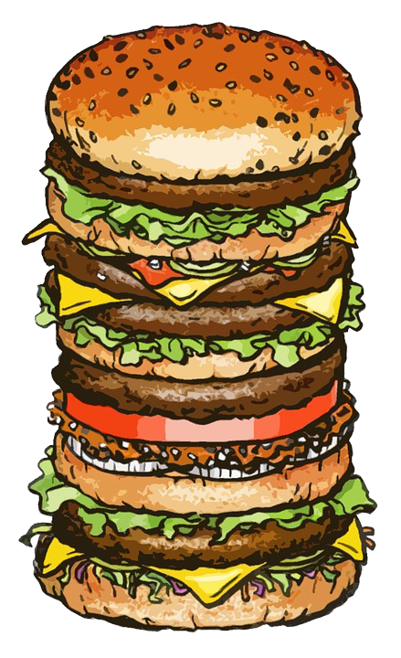
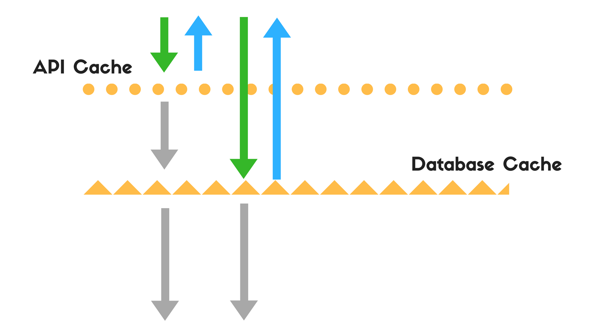
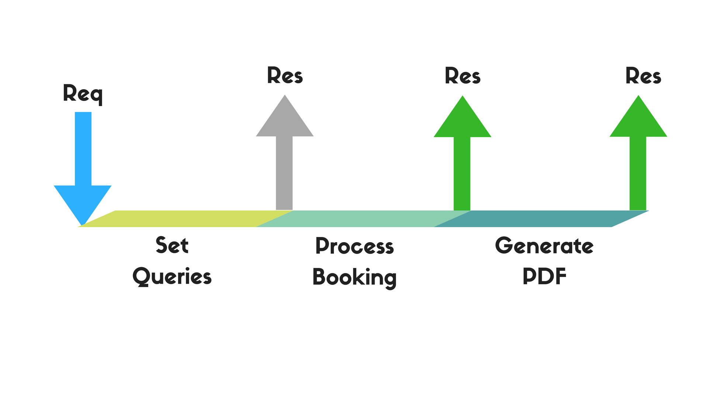
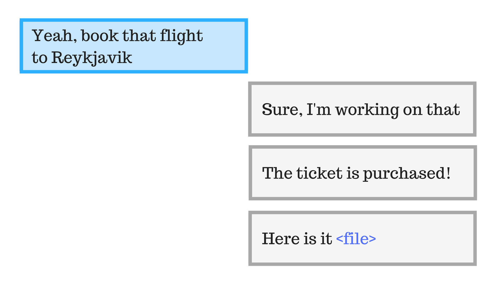
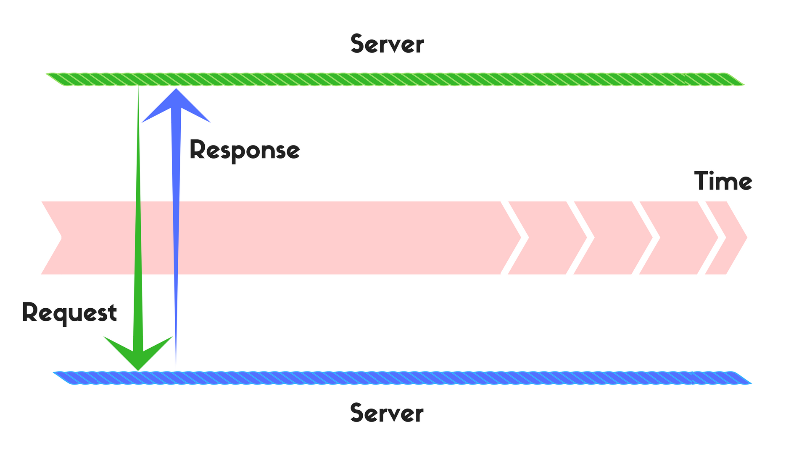
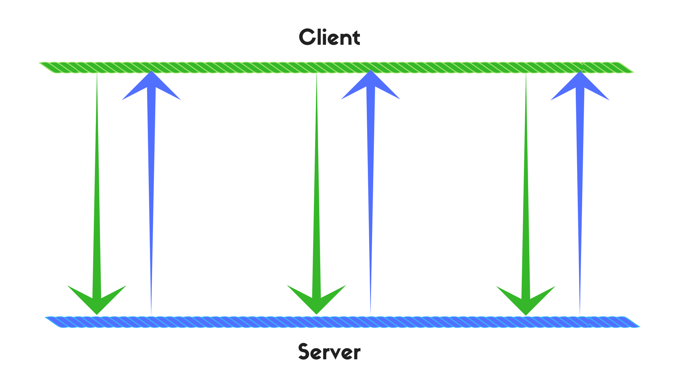
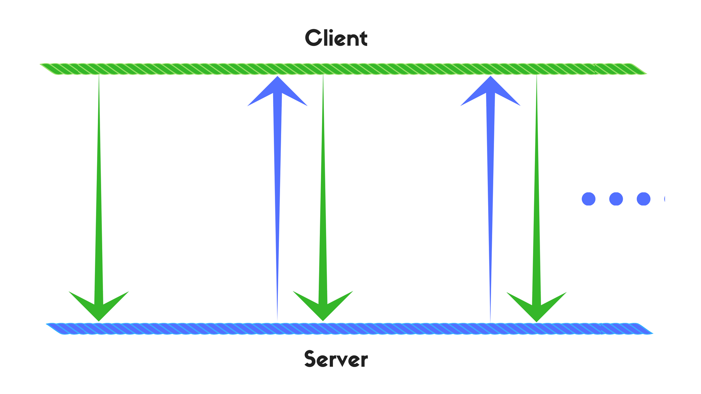
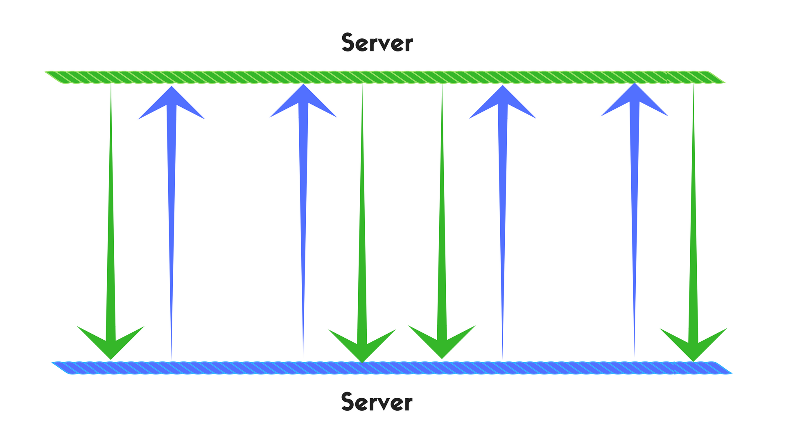

Chatbots Performance
Tryshchenko Oleksandr @ DataArt tryshchenko.com
How to measure performance of chatbots and improve it.
- Chatbots
- Performance
- What?
- Why?
- How?
Why Does the Performance Matters?
- Business logic is a server time ⏰
- Server time is money 💰
- It's nothing without happy clients
⏰ => 💰
💰 => 🌈🦄🎉
What we need to care about:
- Throughput
- Latency
- Error Rate*
Throughput:
- CPU
- RAM
- ROM
Where does the Memory and CPU go?
- Your business logic
- Database
- File System
- I/O
- Web Server
Business Logic?

Example
Flights Booking:
- Get user input
- Request API for flights search
- Give user data and get input again
- Process payment
- Get user input
- Request API for flights search 🙋 🙋 🙋 🙋 🙋
- Give user data and get input again
- Check user in database ⏰
- Process payment 🙋
- Send confirmation email ⏰/🙋
- Save transaction to database ⏰
- Send something to chat 🙋
Caching
Caching
- Whole chat requests
- Requests to specific endpoints
- Database requests
Caching
You can express disagrement...

Overnormalization 😉
Queues
Queue
Queue
Queues
- Work with API's
- I/O Operations
- Complex DB requests
- Sending emails
- ...
Network Optimization
Protocols
- Webhooks
- Long Polling
- WebSocket
It's all about choices
Legend
Client - Server
Long Polling
Webhook
Webhook approaches
- Request - Answer
- Request - Answer - Request
Long Polling vs Webhook

- (w) Concurrency
- (w) Transport Protocol Expenses
- (l) Efficient on big amount requests
- (l) Control the rate of requests
- (both) Easier development
Questions?

Credits
- Photos: unsplash.com
- Animations: giphy.com
Send me a Pigeon
- facebook / tryshchenko
- github / tryshchenko
- twitter / tryshchenko
- tryshchenko.com
- otry.eu